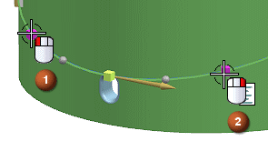
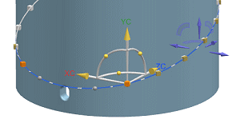
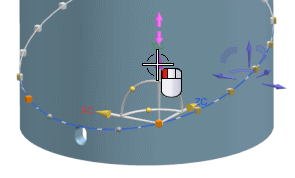

Clock a pattern instance to a new location
You want to move the two instances, symmetrically, upward 100 mm.
-
In the Part Navigator, double-click Pattern (Along).
-
Select the two instance handles as shown, then right-click and select Clock.


-
Select the axis to translate along the YC-axis.

-
In the dynamic input box type a distance of 100.
-
In the Clock dialog box, click OK.
-
In the Pattern Feature dialog box, click OK.

-
Close all parts.